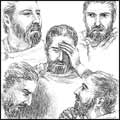
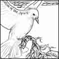
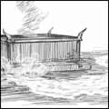
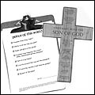

12 items:
2000s |
July 19, 2003 | ||
| Number 1 (Winter 2000) | Timeless Truths Publications, 2000 | Salvation | |
The Bible requires a pure heart—a failure on your part to get the Bible promise fulfilled in you will result in you missing heaven, for "blessed are the pure in heart: for they shall see God," and "holiness, without which no man shall see the Lord." | ||
July 27, 2003 | ||
| Number 2 (Spring/Summer 2000) | Timeless Truths Publications, 2000 | Church | |
The unity that Paul and Apollos had was not a negotiated one.... The essence of that unity came from each being in unity with God. This produced a oneness in Him that did not depend on careful posturing and positioning with each other. | ||
January 27, 2004 | ||
| Number 3 (Autumn 2000) | Timeless Truths Publications, 2000 | Faith | |
"The fool hath said in his heart, There is no God."... Someone has stated that the fool says this in his heart without the full consent of his mind, for if it be difficult to prove by human reasoning that there is a God, it is utterly impossible to prove that there is not. | ||
February 23, 2004 | ||
| Number 4 (Winter 2001) | Timeless Truths Publications, 2001 | Sanctification | |
The Holy Spirit brings us to this—it is far beyond the capacity of man to enter into this rest on his own. We can resist and limit God.... Or we can allow the Holy Spirit to have His way and take us from the wilderness into this spiritual land of Canaan. | ||
March 1, 2004 | ||
| Number 5 (Spring/Summer 2001) | Timeless Truths Publications, 2001 | Consecration | |
It takes time for God to teach you His voice and how to find the mind of the Lord. Look to Him now about the little decisions of life. Don't rush ahead with your own desires and wishes. Wait on Him. Pray for His direction.... He will prepare you if you let Him. | ||
|  | November 12, 2002 | |
| Number 6 (Spring 2002) | Timeless Truths Publications, 2002 | Humility | |
Acknowledgment of truth is the first and vital step to getting help. This truth runs contrary to the philosophy of influence... the skill of easing people into a better condition. The way of the cross is the way of acknowledgment—it is a stark confrontation. | ||
|  | December 13, 2002 | |
| Number 7 (Autumn 2002) | Timeless Truths Publications, 2002 | Sanctification | |
Making up your mind and setting your will, in themselves, are necessary to do the works of man; but, if you want to do the works of God, the work of God must be done in you first, in all its completeness. | ||
|  | June 15, 2003 | |
| Number 8 (Spring 2003) | Timeless Truths Publications, 2003 | Church | |
God, in dealing with us, does not take away our humanity.... the work of God in the earth—His church overall and each member’s individual walk with God—can be a perfect blend of the Divine and the human if we allow the Lord to have His way. | ||
November 4, 2003 | ||
| Number 9 (Autumn 2003) | Timeless Truths Publications, 2003 | Victory | |
"Now unto him that is able to keep you from falling, and to present you faultless before the presence of his glory with exceeding joy." Do you believe this? Do you really believe that God is able to keep you from falling and to present you faultless? | ||
|  | September 11, 2004 | |
| Number 10 (Summer 2004) | Timeless Truths Publications, 2004 | Decision | |
"Can I find, do you think, one answer, one description, which will suit you all—fisherman, mothers, boys and girls, artists, merchants, gentlemen, the old man and the little child? Yes, I can.... Each of you, without exception, might write this—I am a servant. | ||
January 22, 2005 | ||
| Number 11 (Winter 2005) | Timeless Truths Publications, 2005 | Humility | |
Jesus was quick to give the credit to God. Although He was God Himself... He quickly and reflexively gave the credit for virtue to His heavenly Father. It is this set of heart and mind that avoids the pride of life and lives in humble reliance upon God. | ||
December 1, 2005 | ||
| Number 12 (Summer 2005) | Timeless Truths Publications, 2005 | Church | |
It is all uphill to the top of the mountains. Also, for people to flow together in this manner, they must melt. There are a whole lot of things that can only work in the Bible pattern if the melting occurs. | ||